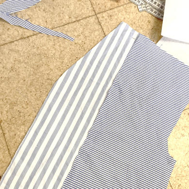
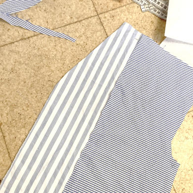

SNØRRESKJORTE
style no. 9827
Mømstret for begyndere
er en skjorte med masser
af snørrer, der giver en fin
effekt, men ikke kræver
den store syerfaring
Til denne skjorte skal du bruge lige så mange forskellige skjorter eller andre tøjstykker og rester, du selv vil. Det er kun fantasien, der sætter grænser. Grundmønstret er med løbegange i ærmer og skuldre, men du kan selv tilføje flere fx i taljen, eller lege med flæser i de forskellige sammensyninger. På den måde kan du også transformere den til en lille let kjole. Det er en fordel at bruge en overlocker til at afslutte sømrummene på en fin måde, men en overlockfunktion eller almindelig zigzag kan også gøre tricket. For en mere teknisk finish kan du også afprøve franske sømme eller kapsøm.
Det første jeg gør, når jeg redesigner tøj elle stof, der allerede er syet i, er at splitte det ad, så stofstykkerne bliver så regulære som
muligt. Du kan også bruge tørklæder andre større materialer, så du slipper for at bearbejde stoffet så meget inden du syr.
De kjoler og skjorte, jeg har valgt at arbejde med, havde allerede en masse bånd og snørrer, som jeg gerne vil beholde og
genbruge i mit færdige design, så dem lægger jeg til side for nu.
Hverfra er det op til dig, at designe sit eget materiale - hvis du ligesom jeg - arbejder med striber, kan du prøve at lege med at
vende dem både vandret og lodret. Det kan give en ret fin effekt.

 

Mange af de materialer, jeg har valgt at bruge, er ret tynde og levende, så for ikke at risikere at trække i stoffet med overlockeren,
har jeg valgt at sy alle mine dele sammen med franske sømme. Du kan sagtens selv bruge en overlocker eller lignende.
Du kan selv prøve at lave en fransk søm, ved først at sy med 0,5 cm sømrum hvor stofstykkerne ligger vrang mod vrang. Derefter
klipper du evt overskydende sømrum af - det er vigitgt at det max er 0,5 cm, ellers kan det ses på retsiden, når du er færdig. til
sidst lægger du stoffet ret mod ret og sy 0,5 cm fra den syning, du lavede før, så dit sømrum nu er pakket helt ind.
Du kan også lave kapsømme, hvis du vil have et glattere look på indersiden. Find guiden i syvejledningen.


Nu er det tid til at finde de bånd frem, jeg gemte i starten - eller lave dine egne, hvis du ikke har nogen liggende. Jeg bruger den
ekstra sømrum i skuldrene til at lave løbegange både på for- og bagstykket , som jeg trækker snørrene igennem.
På det nederste stykke af ærmerne syr jeg en løbegang på, så jeg kan trække snørrer igennem der også. Du kan og så vælge at
beholde trompetærmerne, som de er.
Så er du klar til ay ærmerne på - pas på ikke at sy ind i snørrerne i skuldrene, så bare tag dig god tid.


Til sidst skal du have lagt ærmerne op, syet et skråbånd rundt i halsåbningen - hust bindebånd, så skjorten kan lukkes. Når båndet
er syet på, kan du lægge bunden af skjorten op.
I stedet for oplægning, kan du også nemt gøre skjorten til en kjole, ved bare at sy ekstra stof på.